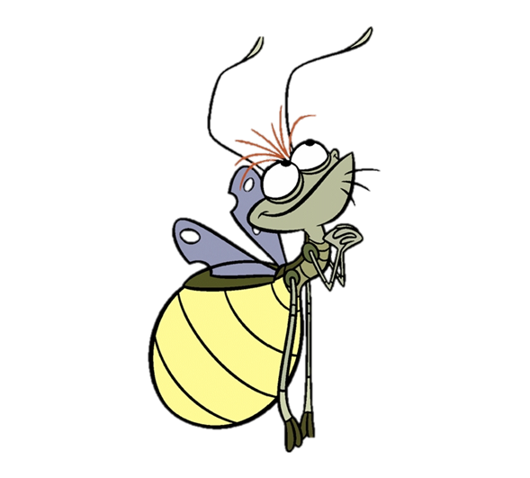
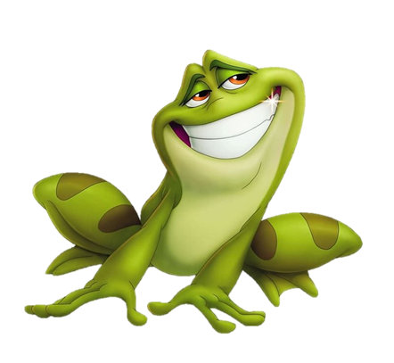
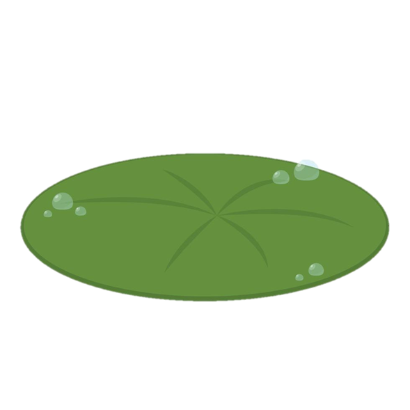
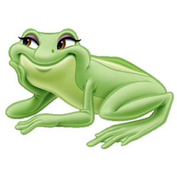

para la persona más especial de mi vida

esta noche es magica
Hay noches en el pantano
que parecen sacadas de un sueno.
La luna ilumina el agua,
las luciernagas danzan entre los arboles,
y el mundo entero se detiene
como si supiera que algo hermoso esta pasando.
Tu eres esas noches para mi.
La magia que no esperaba encontrar
y que ya no podria imaginar perder.
j + m · para siempre
Ray grabo ese corazon en el arbol
con toda la luz que llevaba dentro.
Porque cuando uno ama de verdad
quiere que el mundo entero lo sepa —
quiere dejarlo grabado en algun lugar
que no se borre con el tiempo.
Asi te llevo a ti.
Grabada. Permanente.
J + M · para siempre.
como ray y evangeline
Ray amaba a Evangeline con una ternura sin limites.
Sin importar el tamano, sin importar la distancia,
sin importar que nadie mas lo entendiera.
La amaba porque si, porque era suya,
porque en ese amor encontro su razon.
Asi te amo yo a ti —
con esa misma ternura absurda y hermosa,
con esa certeza tranquila de quien sabe
que encontro algo que no se repite.
Contigo me sobra el mundo.

el baile del pantano
Evangeline no era una estrella cualquiera.
Era su estrella — la que Ray miraba cada noche,
la que lo guiaba, la que lo hacia sentir
que el amor mas grande que existe
vale cada momento de espera.
Tu eres eso para mi, Mafe.
Mi Evangeline.
La que me ilumina aunque este lejos.
La que me orienta cuando no se hacia donde ir.
La estrella que elegi, y que elijo cada dia.

lo que florece entre nosotros
Las flores del pantano no crecen en jardines perfectos.
Crecen en el agua, en lo incierto,
en los lugares que nadie esperaria.
Y aun asi son hermosas —
quizas por eso son hermosas.
Lo que hay entre tu y yo
crecio asi tambien: sin manual, sin garantias,
con distancia y con fe.
Y mira lo que tenemos —
algo real, algo nuestro, algo que vale todo.

para siempre · para ti
Esta noche magica es para ti.
Cada luciernaga, cada nota,
cada palabra escrita aqui
es para decirte lo mismo de siempre
pero de una manera que nunca olvides:
Te amo, Mafe.
Profundo. Sin condiciones.
Con todo lo que soy y lo que sere.
Eres mi Evangeline.
Mi estrella. Mi flor. Mi hogar.